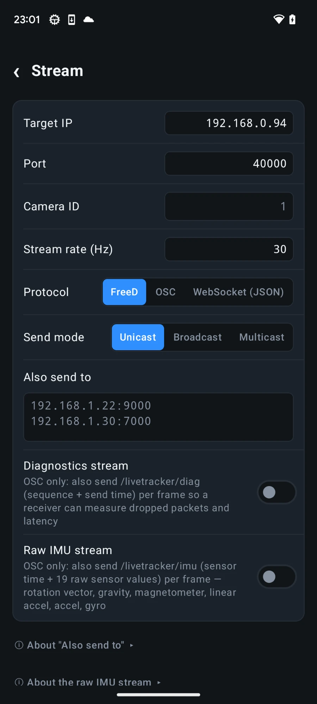
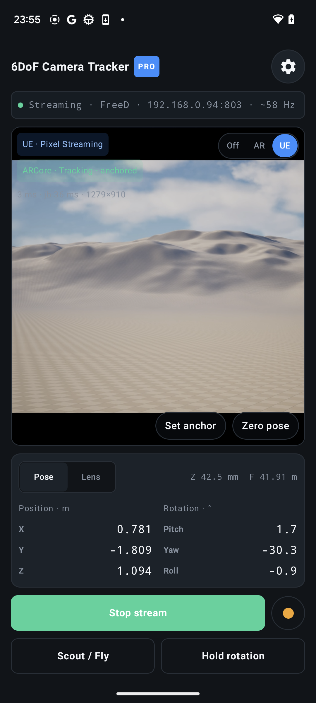

What you need
- An ARCore-capable Android phone running 6DoF Camera Tracker.
- A Windows computer running Unreal Engine with a project containing a CineCamera actor.
- The phone and computer on the same local network.
- A UDP port available for the FreeD source. Use the same port in Unreal and the app.
Tracking and video are separate connections
FreeD carries camera and lens data into Unreal. Pixel Streaming sends rendered video back to the phone. Complete tracking first, then add the viewfinder.
Prepare Unreal Engine
- Open Edit → Plugins and enable Live Link and Live Link FreeD. Restart the editor if requested.
- Open the Live Link panel from Unreal's Virtual Production tools.
- Add a FreeD source and choose a UDP port that is not already in use.
- Allow Unreal Engine through Windows Firewall on private networks when prompted.
The Live Link source should remain visible even before packets arrive. Its subject becomes active when the phone starts streaming.
Configure the Android app
| Setting | Recommended value | Reason |
|---|---|---|
| Protocol | FreeD | Native camera-tracking path for Unreal Live Link. |
| Target IP | Unreal computer's local IPv4 address | Sends directly to the workstation. |
| Target port | Same port as the FreeD source | Both ends must match. |
| Send mode | Unicast | Lowest-overhead choice on a normal Wi-Fi network. |
| Axis mapping | Default preset | Starts with the app's Unreal-oriented coordinate mapping. |
| Space scale | 1 | Keep the physical tracking scale unchanged initially. |

Drive a CineCamera actor
- Add or select a CineCameraActor in the level.
- Add a Live Link Controller component to the camera.
- Select the subject created by the FreeD source and use the camera role/controller available in your Unreal version.
- Start tracking in the app, set the phone down at the intended origin, and press Zero pose.
- Calibrate zoom, focus, or iris in the app before expecting physical lens values in Unreal.
Do not compensate twice
Start with the app's Default mapping and neutral offsets. If one axis is reversed, correct it in one place only: either the app mapping preset or the Unreal camera setup.
Verify one axis at a time
- Move the phone right, forward, and up separately. Confirm the virtual camera follows each direction.
- Turn right, tilt up, and roll clockwise separately. Check for the expected response without cross-axis movement.
- Walk a measured distance and confirm the virtual translation matches the stage scale.
- Stop and restart the stream to confirm the source reconnects cleanly.
Add the Unreal viewfinder
Once tracking works, configure Unreal Pixel Streaming and enter its signalling-server address under Settings → View / Preview Input. Switch the viewfinder to UE to see the rendered camera feed while the app continues sending FreeD.

Troubleshooting
| Symptom | Check |
|---|---|
| No Live Link subject | Confirm the target IP, matching UDP port, private-network firewall permission, and that streaming is running. |
| Rotation works but position does not | Use ARCore rather than IMU-only tracking and confirm camera permission and tracking status. |
| Wrong axis or direction | Reset the app to the Default axis preset, then adjust only the incorrect channel. |
| Lens values do not change | Enable and calibrate the required lens channel in the app. |
| UE viewfinder is blank | Test the Pixel Streaming URL separately and remember that tracking can work without return video. |